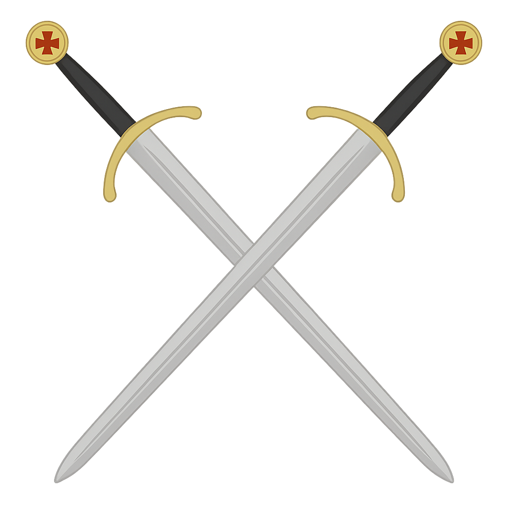

Fraternité templière
Ordre Sacré des Neuf Templiers de Jérusalem
Traité de fraternité et de coopération
Entre
l'Ordre Secret du Temple (OST)
et
l'Ordre Sacré des Neuf Templiers
de Jérusalem (OSD9TDJ)
Ce traité établit une reconnaissance mutuelle et des relations de fraternité et de coopération entre les deux ordres, dans le respect de leur indépendance et de leurs traditions.
Le document original signé constitue la référence officielle du traité.
✠ L'Ordre Secret du Temple ✠
L'Ordre Secret du Temple (OST) est une association templière régie par la loi de 1901, dont le grand maître est Paul Sanda, également patriarche de l'Église Hélios.
Le traité marque la volonté des deux ordres de développer leurs relations fraternelles, dans le respect de leurs traditions respectives.
Le traité de fraternité entre l'OST et l'OSD9TDJ
Le traité de fraternité et de coopération conclu entre l'Ordre Secret du Temple, désigné par le sigle OST, et l'Ordre Sacré des Neuf Templiers de Jérusalem, désigné par le sigle OSD9TDJ, constitue un engagement réciproque de reconnaissance, de fraternité et de coopération entre deux organisations templières distinctes.
Ce traité s'inscrit dans une démarche de rapprochement institutionnel et fraternel, fondée sur le respect de l'identité propre à chaque ordre, de ses traditions, de son organisation et de ses références historiques et spirituelles.
Les deux organisations affirment leur volonté de maintenir des relations constructives et respectueuses, sans renoncer à leur autonomie ni à leur gouvernement interne.
Le document signé demeure la source de référence pour déterminer la portée exacte des engagements réciproques.
L'Ordre Secret du Temple
L'Ordre Secret du Temple, également connu sous l'abréviation OST, est une organisation templière constituée, selon sa présentation institutionnelle, sous la forme d'une association relevant de la loi française du 1er juillet 1901.
Son grand maître est Paul Sanda, également patriarche de l'Église Hélios.
L'OST se réfère à une tradition historique et spirituelle liée au renouveau templier du XIXe siècle et notamment à Bernard-Raymond Fabré-Palaprat.
Dans la compréhension de sa propre succession, l'OST revendique une transmission de l'héritage templier à Fabré-Palaprat par l'intermédiaire des ducs d'Armagnac.
Cette revendication constitue un élément important de l'identité historique et institutionnelle de l'Ordre Secret du Temple.
Paul Sanda
Paul Sanda exerce, selon les présentations institutionnelles concernées, la fonction de grand maître de l'Ordre Secret du Temple et celle de patriarche de l'Église Hélios.
Ces deux responsabilités doivent être distinguées sur le plan institutionnel.
La grande maîtrise de l'Ordre Secret du Temple concerne la direction et la représentation de cette organisation templière associative.
La fonction patriarcale exercée au sein de l'Église Hélios relève de l'organisation religieuse et spirituelle de cette communauté.
Le fait qu'une même personne exerce ces deux responsabilités ne signifie pas que l'Ordre Secret du Temple et l'Église Hélios constituent juridiquement une seule et même association.
Leur identité, leur objet institutionnel et leur régime associatif doivent être distingués.
L'Église Hélios
L'Église Hélios est présentée comme une communauté chrétienne de tradition orthodoxe, gnostique et johannite, constituée sous la forme d'une association cultuelle relevant de la loi française du 9 décembre 1905.
Elle possède une identité spirituelle particulière, associant des références chrétiennes, johannites, gnostiques et orthodoxes.
Son patriarche, Paul Sanda, est également grand maître de l'Ordre Secret du Temple.
L'Église Hélios revendique une succession apostolique et canonique remontant à saint Pierre par la tradition du siège d'Antioche.
Cette succession est présentée par l'Église comme documentée et comme faisant partie de son héritage ecclésiastique.
La tradition apostolique d'Antioche occupe une place importante dans l'histoire du christianisme ancien.
Le siège d'Antioche est traditionnellement associé à l'apôtre Pierre et aux origines des premières communautés chrétiennes.
L'Église Hélios inscrit sa propre compréhension de la succession apostolique dans cette tradition de transmission ecclésiastique.
Il convient de distinguer l'existence de documents de succession, la revendication d'une filiation apostolique et la reconnaissance canonique de cette filiation par d'autres Églises.
La présentation de cette succession sur la présente page respecte l'identité revendiquée par l'Église Hélios, sans constituer une expertise canonique indépendante.
La succession apostolique revendiquée par l'Église Hélios
Dans la tradition chrétienne, la succession apostolique désigne la transmission de la charge épiscopale et de l'autorité ecclésiastique à travers une continuité de consécrations et de ministères.
Cette notion occupe une place particulièrement importante dans les traditions catholiques, orthodoxes et dans diverses Églises issues d'autres filiations épiscopales.
L'Église Hélios revendique une succession apostolique et canonique issue de la tradition de saint Pierre d'Antioche.
Elle présente cette filiation comme documentée au moyen de transmissions ecclésiastiques successives.
Cette revendication participe à la compréhension que l'Église Hélios possède de son identité et de la légitimité de ses ministères.
La validité sacramentelle et la reconnaissance canonique d'une succession peuvent faire l'objet d'appréciations distinctes selon les traditions et les autorités ecclésiastiques.
Dans le cadre des relations fraternelles entre l'OST et l'OSD9TDJ, cette succession est considérée comme une composante de l'identité religieuse revendiquée par l'Église Hélios.
Bernard-Raymond Fabré-Palaprat
Bernard-Raymond Fabré-Palaprat est une figure centrale du renouveau templier français du début du XIXe siècle.
Son activité s'inscrit dans une période de réorganisation et de reconstitution de mouvements chevaleresques se réclamant de l'héritage de l'ancien ordre du Temple.
Fabré-Palaprat est également associé à la création de l'Église johannite propre à son mouvement.
Cette Église johannite constitue un élément important de son projet religieux et institutionnel.
Il ne s'agit donc pas simplement d'une référence générale à saint Jean, mais bien d'une tradition ecclésiastique particulière organisée dans le contexte du mouvement de Fabré-Palaprat.
La tradition johannite associée à Fabré-Palaprat s'inscrit dans une lecture spécifique de l'histoire du christianisme, de la transmission spirituelle et de l'héritage templier.
Les organisations modernes qui se réclament de cette tradition peuvent en proposer différentes interprétations historiques, spirituelles et institutionnelles.
L'Église johannite de Fabré-Palaprat
L'Église johannite associée au mouvement de Bernard-Raymond Fabré-Palaprat est une construction ecclésiastique du XIXe siècle.
Elle se réfère à une tradition chrétienne johannite, dont les références spirituelles accordent une importance particulière à saint Jean.
Dans le contexte de Fabré-Palaprat, cette référence johannite est intégrée à une conception spécifique de la continuité religieuse et templière.
L'Ordre Secret du Temple rattache sa propre tradition à cet héritage de Fabré-Palaprat.
Cette filiation revendiquée constitue une référence historique et spirituelle de l'organisation.
Elle doit être distinguée des différentes formes de johannisme qui ont existé dans d'autres contextes religieux et ésotériques.
La succession templière revendiquée par l'OST
L'Ordre Secret du Temple revendique une filiation templière particulière associée à Bernard-Raymond Fabré-Palaprat.
Selon cette tradition, la transmission de l'héritage templier à Fabré-Palaprat serait intervenue par l'intermédiaire des ducs d'Armagnac.
Cette succession revendiquée constitue un élément fondamental de la présentation historique de l'OST.
Il est important de préciser que, dans cette interprétation, la transmission ne repose pas sur la Charte de Larménius.
L'OST distingue ainsi la filiation qu'il revendique des récits de succession templière fondés sur cette charte.
La référence aux ducs d'Armagnac doit être comprise comme faisant partie de la tradition historique propre à l'Ordre Secret du Temple.
La présente documentation expose cette revendication sans prétendre établir, par elle-même, une chaîne historique ininterrompue depuis l'ordre médiéval du Temple.
Les ducs d'Armagnac et la transmission revendiquée
La maison d'Armagnac appartient à l'histoire des grandes lignées nobiliaires françaises.
Dans la tradition revendiquée par l'Ordre Secret du Temple, les ducs d'Armagnac occupent une place dans le récit de transmission de l'héritage templier.
L'OST présente cette transmission comme ayant conduit à Bernard-Raymond Fabré-Palaprat.
Cette interprétation se distingue des filiations templières modernes faisant intervenir la Charte de Larménius.
Les filiations chevaleresques modernes doivent être étudiées à partir des documents historiques disponibles, des actes de transmission, des dates et des personnes effectivement identifiées.
Dans le cadre de la présente fraternité, l'OSD9TDJ respecte la tradition historique revendiquée par l'OST.
Distinction avec la Charte de Larménius
La Charte de Larménius est un document fréquemment évoqué dans les récits de succession de certains mouvements templiers modernes.
Elle est notamment associée à des traditions de continuité institutionnelle postérieures à la disparition de l'ordre médiéval du Temple.
L'Ordre Secret du Temple revendique cependant une transmission à Fabré-Palaprat par les ducs d'Armagnac, et non une transmission fondée sur la Charte de Larménius.
Cette distinction est importante pour comprendre l'identité historique que l'OST attribue à sa propre succession.
La reconnaissance mutuelle entre l'OST et l'OSD9TDJ
Le traité de fraternité repose sur le principe de reconnaissance mutuelle entre les deux organisations signataires.
Cette reconnaissance est réciproque.
L'Ordre Secret du Temple reconnaît l'Ordre Sacré des Neuf Templiers de Jérusalem comme organisation partenaire dans le cadre de leurs relations fraternelles.
Réciproquement, l'Ordre Sacré des Neuf Templiers de Jérusalem reconnaît l'Ordre Secret du Temple comme partenaire fraternel.
Les deux organisations s'engagent à respecter leur identité propre, leur indépendance, leurs structures et leurs traditions.
Dans cet esprit, l'OSD9TDJ respecte les références historiques et spirituelles revendiquées par l'OST, notamment sa filiation associée à Fabré-Palaprat et aux ducs d'Armagnac.
Il respecte également l'identité religieuse de Paul Sanda en tant que patriarche de l'Église Hélios, ainsi que la succession apostolique revendiquée par cette Église.
La reconnaissance fraternelle des organisations et le respect de leurs traditions ne doivent toutefois pas être confondus avec une certification historique indépendante ou une décision de reconnaissance canonique émanant d'une autorité ecclésiastique extérieure.
La portée juridique et institutionnelle des engagements demeure déterminée par les dispositions du traité signé.
L'autonomie des deux ordres
Le traité de fraternité et de coopération n'a pas pour objet de fusionner les deux organisations.
L'OST conserve son identité, son organisation, sa grande maîtrise et ses traditions.
L'OSD9TDJ conserve également son identité, son organisation, son gouvernement et ses traditions.
Les engagements de coopération reposent sur le consentement et la volonté des deux parties.
La fraternité n'implique pas de subordination d'un ordre à l'autre.
La coopération fraternelle
La coopération prévue par le traité peut concerner différents domaines compatibles avec les objectifs des deux organisations.
Elle peut notamment prendre la forme de rencontres fraternelles, d'échanges historiques, de travaux culturels, d'initiatives patrimoniales et de projets communs.
Les parties peuvent également favoriser le dialogue entre leurs membres et leurs représentants.
La coopération s'exerce dans le respect des traditions et des moyens propres à chaque ordre.
Organisation du traité de fraternité
Le document signé comprend un préambule et huit articles organisant les relations entre les deux ordres.
Article premier – Reconnaissance mutuelle
Le premier article pose le principe de la reconnaissance réciproque des deux organisations, dans le respect de leur indépendance et de leurs traditions.
Article II – Fraternité templière
Les deux parties affirment leur volonté de maintenir des relations fraternelles fondées sur le respect mutuel, la loyauté et la coopération.
Articles suivants
Les autres dispositions du traité signé définissent les modalités et les limites des engagements des deux organisations. Leur formulation exacte doit être consultée dans le document original.
La portée institutionnelle du traité
La fraternité conclue entre l'OST et l'OSD9TDJ exprime la volonté des organisations signataires de reconnaître leur existence respective et d'entretenir des relations de coopération.
Elle s'inscrit dans une démarche de respect des identités chevaleresques, historiques et spirituelles revendiquées par chacune des parties.
Cette reconnaissance mutuelle doit être interprétée conformément au traité signé. Elle ne saurait être étendue automatiquement à des engagements ou à des compétences qui n'y figurent pas.
Distinction entre succession templière et succession apostolique
La succession templière revendiquée par l'Ordre Secret du Temple et la succession apostolique revendiquée par l'Église Hélios relèvent de deux domaines distincts.
La première concerne une filiation historique et chevaleresque que l'OST rattache à Bernard-Raymond Fabré-Palaprat et aux ducs d'Armagnac.
La seconde concerne une filiation ecclésiastique et épiscopale que l'Église Hélios rattache à la tradition apostolique d'Antioche.
Paul Sanda est présenté comme exerçant des responsabilités dans ces deux institutions, mais celles-ci demeurent juridiquement et institutionnellement distinctes.
Le respect des traditions historiques et spirituelles
Dans le cadre de leur fraternité, l'Ordre Secret du Temple et l'Ordre Sacré des Neuf Templiers de Jérusalem reconnaissent leur qualité réciproque d'organisations partenaires.
Le respect des traditions revendiquées par chacune des organisations constitue une composante de leurs relations fraternelles.
Cette démarche n'implique pas que les deux organisations possèdent nécessairement les mêmes origines, les mêmes filiations, les mêmes pratiques ou les mêmes structures.
Elle repose sur la reconnaissance de leur identité respective et sur leur volonté commune de coopération.
Le document original signé
Le traité de fraternité et de coopération entre l'Ordre Secret du Temple et l'Ordre Sacré des Neuf Templiers de Jérusalem constitue le document de référence pour l'ensemble des engagements qu'il contient.
La présente page propose une présentation institutionnelle et historique destinée à situer ce traité dans le contexte des traditions revendiquées par les organisations concernées.
En cas de différence d'interprétation, le texte signé du traité demeure la référence à consulter.
